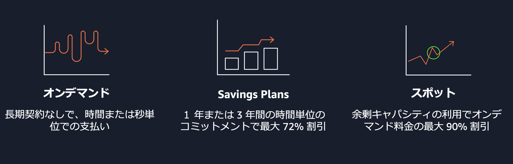
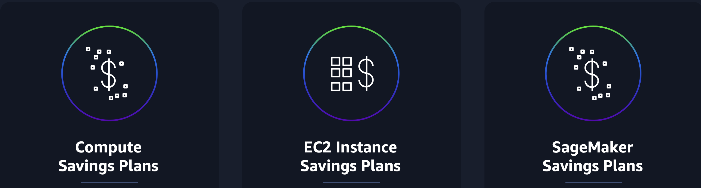
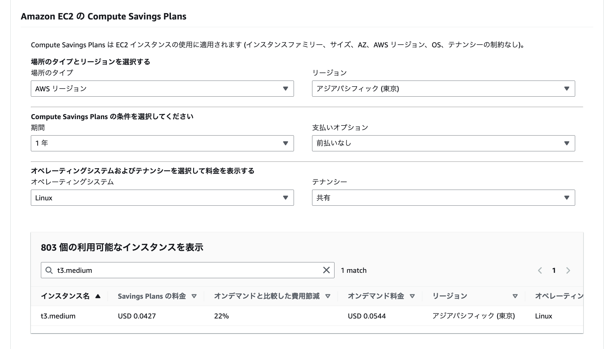
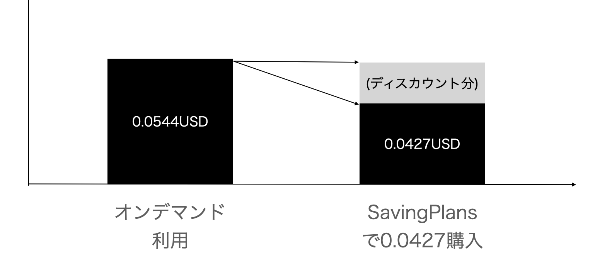
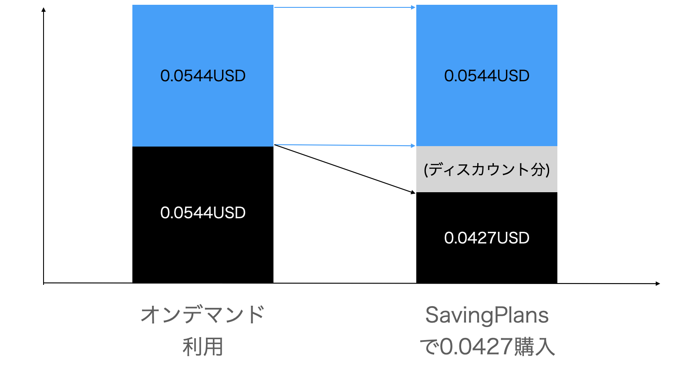
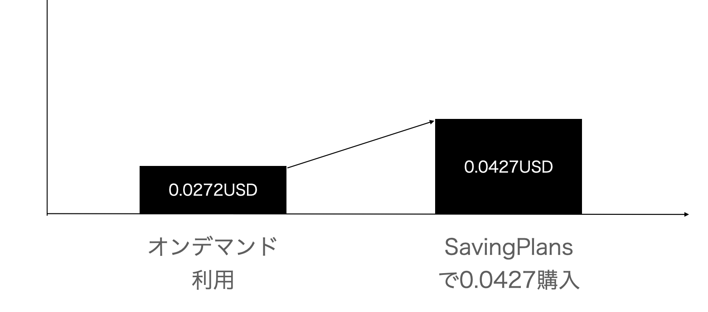
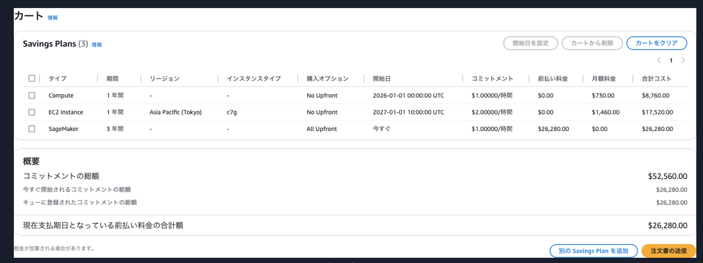

Saving Plans¶
EC2の購入に関して、長期間のコミットメントをすることによってディスカウントを受けることができるサービス。
コミットメントは、1年間や3年間という期間で、対象のEC2を時間あたりでXXXUSD利用するという単位で契約する。
EC2の購入形態¶
EC2には、下図のようにいくつかの購入パターンがある。  AWS Black Belt Online Seminar Savings Plans
具体的な特徴としては以下。
オンデマンドは従量課金で、フレキシブルな利用が可能
Saving Plansは長期契約することで、ディスカウントを享受できる
スポットは利用に関して安定はしないが、大きく費用は下がる
RI(Reserved Instance)についてもあるが、近年はAWS側はSaving Plansの利用を推奨している。 Amazon EC2 のリザーブドインスタンスの概要
リザーブドインスタンスよりも Savings Plans をお勧めします。
節約プランはリザーブドインスタンスと同様に、AWS コンピューティングコストを節約し、低価格 (オンデマンド料金から最大 72% オフ) を実現する最も簡単で柔軟な方法です。
ただし、Savings Plans はリザーブドインスタンスとは異なります。
リザーブドインスタンスでは特定のインスタンス構成にコミットしますが、Savings Plans ではニーズに最も合ったインスタンス構成を柔軟に使用できます。
Savings Plans を使用する場合は1 時間 につき USD 単位で一定の使用量を守ることになります。
Saving Plansに適したワークロード¶
SavingPlansの適用が適しているのは、1年間や3年間などの長期かつ毎時間必ず利用することが確定しているワークロード。 例えば、24時間常起動している、EC2など。
Saving Plansのタイプ¶
Saving Plans自体にも複数のタイプが存在する。  AWS Black Belt Online Seminar Savings Plans
特徴としては以下で適用する対象範囲でディスカウント率などが異なる。 本ページはEC2 Instance Saving Plansを中心に説明。
プラン名 |
対象サービス |
特徴・適用条件 |
|---|---|---|
Compute Savings Plans |
EC2, Fargate, Lambda |
柔軟性が最も高く、インスタンスファミリー・サイズ・リージョン問わず適用される |
EC2 Instance Savings Plans |
EC2（特定リージョン・特定ファミリー） |
インスタンスファミリー・サイズ・リージョンを固定する代わりに、最も高い割引率が得られる |
SageMaker Savings Plans |
SageMaker インスタンス |
SageMaker に自動適用。柔軟性が高く、モデル開発・学習・推論用途すべてに対応 |
もう少し詳しく適用範囲について整理すると以下。
項目 |
Compute Savings Plans |
EC2 Instance Savings Plans |
SageMaker Savings Plans |
|---|---|---|---|
割引率 |
最大 66% |
最大 72% |
最大 64% |
適用サービス |
EC2, Fargate, Lambda |
EC2 |
SageMaker |
インスタンスファミリー |
○ |
固定 |
○ |
インスタンスサイズ |
○ |
○ |
○ |
リージョン |
○ |
固定 |
○ |
OS |
○ |
○ |
○ |
テナンシー |
○ |
○ |
○ |
※「○」はファミリーやサイズなどに関係なく自動的に適用。
支払いオプション¶
Saving Plansでは、コミットメントの期間(1年間 or 3年間)だけでなく、合計金額について先払いするか否かによってディスカウント率が異なる。
支払い方式 |
開始時の支払い |
毎月の支払い |
割引率 |
|---|---|---|---|
全額前払い |
コミットメント金額一括支払い |
なし |
高 |
一部前払い |
コミットメント総額の 50%以上で任意に指定可能 |
コミットメント残金を月額費用として支払い |
中 |
前払いなし |
なし |
月額費用として支払い |
低 |
Saving Plansの適用イメージ¶
コミットメント¶
Saving Plansは、1年間や3年間という期間で、対象のEC2を時間あたりでXXXUSD利用するというコミットメント単位で契約し、その分のディスカウントを受けることができる。
Saving Plansのコミットメントは時間当たりで適用が行われるため、利用しなかった時間分を他の時間で充当することはできない点に注意する。
ディスカウント率などは公式ドキュメントから確認をすることができる。
例えば、以下の例では公式ドキュメントを利用し、東京リージョンで1年間、支払いオプションなし（毎月）、LinuxOS、テナントは共有、という設定でt3.mediumのEC2のオンデマンドとSaving Plansの比較をしている。

オンデマンドであれば、0.0544USD/1hの費用が必要となる。
一方でSaving Plansとしては、のコミットメントにより、0.0427USD/1hでt3.mediumのEC2を利用することができ、22%の費用削減をすることができる。
購入時の金額はコミットメント金額の0.0427USD/1hを設定することになるため、Saving Plansを購入する際は、購入する条件などを決定し公式ドキュメントでの確認を行う。
適用例¶
上記で検討した購入例で、t3.mediumが1台を24h、1年間利用する。 オンデマンド費用0.0544USD/1h分をSavingPlansのディスカウントを受けるため、0.0427USD/1hをSaving Plansで購入したとする。
コミットメントと利用が一致¶
コミットメントと利用料が一致している場合は、オンデマンドは0.0544USD/1hが全てSaving Plansの購入で充足するため、EC2オンデマンドの費用請求はなく、Saving Plansの購入分のみ請求される。 
コミットメントに対して利用が超過している場合¶
コミットメントに対して利用が超過している場合、例えば以下の図のようにt3.mediumを2台分利用したとする。 その場合、オンデマンド利用の1台分の0.0544USD/1h分はSaving Plansの購入で充足されるが、残りの1台分はオンデマンドとして請求される。 そのため、EC2オンデマンドの費用請求はt3.medium一台分とSaving Plansの購入分が請求される。

コミットメントに対して利用が不足している場合¶
コミットメントに対して利用が不足している場合、例えば以下の図のようにt3.mediumを半分利用したとする。（以下の例でいうと1h当たり30minの利用。通常利用でいうと毎日12hのみ利用や半年のみ利用などが該当） その場合、SavingPlansの費用のみが請求されるものの、ディスカウント率は22%のため、半分利用の場合はオンデマンドのままの方が費用削減は高かったことがわかる。
Saving Plansのコミットメントは時間当たりで適用が行われるため、利用しなかった時間分を他の時間で充当することはできない点に注意する。

購入方法¶
AWSのコンソールから、購入設定やコミットメント額を指定して購入可能。
 AWS Black Belt Online Seminar Savings Plans
キューイング機能¶
1年間や3年間などの長期計画となるため、継続を失念しないためにもキューイング機能を利用するべき。 将来の⽇付で⾏うようにキューに登録することや、スケジュールを設定することができる。
キャンセルについて¶
2024/03 から Savings Plans 購⼊後 7 ⽇間以内であれば解除（キャンセル・返却）することが可能。 コミットメント⾦額を間違えてしまった場合などにご利⽤可能だが以下の注意点あり
1 時間あたりのコミットメント額が $100 以下
購⼊から 7 ⽇以内
購⼊した暦⽉内
管理アカウントごとに年間 10 回まで